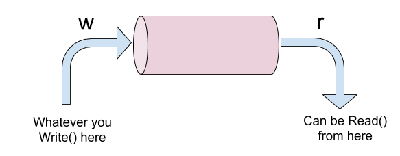

In this post I want to discuss faking (or redirecting) standard input and output (os.Stdin and os.Stdout [1]) in Go programs. This is often done in tests, but may also be useful in other scenarios.
The basic idea is demonstrated in the following pseudocode:
StartFakingIO(stdin to feed)
FunctionUnderTest(...)
out := GetCapturedOutput()
if out != expected { ... }
We assume FunctionUnderTest reads from os.Stdin and writes to os.Stdout directly (this whole post is unnecessary if FunctionUnderTest uses dependency injection to take an io.Reader and io.Writer instead). Therefore StartFakingIO should redirect the os.Stdin and os.Stdout globals, such that the code of FunctionUnderTest remains unchanged.
Pipes
Since os.Stdin and os.Stdout are of type *os.File, we can't just use io interfaces to replace them; we need concrete *os.Files. Luckily, this is exactly what the os.Pipe() function provides:
func Pipe() (r *File, w *File, err error)
Pipe returns a connected pair of Files; reads from r return bytes written to
w. It returns the files and an error, if any.
In graphic form:
Here's a simple code snippet to demonstrate it:
func main() {
r, w, err := os.Pipe()
if err != nil {
log.Fatal(err)
}
w.Write([]byte("hello"))
buf := make([]byte, 1024)
n, err := r.Read(buf)
if err != nil {
log.Fatal(err)
}
fmt.Println(string(buf[:n]))
}
This prints "hello".
If os.Pipe reminds you of Unix pipes, that's because it's exactly what it is. Under the hood, os.Pipe is a thin wrapper around the pipe(2) syscall.
Given this pipe construct, it's easy to come up with a faking scheme for os.Stdout:
package main
import (
"fmt"
"log"
"os"
)
func main() {
r, w, err := os.Pipe()
if err != nil {
log.Fatal(err)
}
origStdout := os.Stdout
os.Stdout = w
fmt.Print("hello to stdout")
buf := make([]byte, 1024)
n, err := r.Read(buf)
if err != nil {
log.Fatal(err)
}
// Restore
os.Stdout = origStdout
fmt.Println("Written to stdout:", string(buf[:n]))
}
Faking os.Stdin is very similar, except the direction is inverted. See the full code at the end of the post.
This approach is the basis of most stdio faking packages you'll find online. Unfortunately, this approach has a serious problem in some scenarios.
Pipe buffers
Pipes on Linux have limited capacities. Here's what man 7 pipe has to say about it:
A pipe has a limited capacity. If the pipe is full, then a write(2) will block or fail, depending on whether the O_NONBLOCK flag is set (see below). Different implementations have different limits for the pipe capacity. Applications should not rely on a particular capacity: an application should be designed so that a reading process consumes data as soon as it is available, so that a writing process does not remain blocked.
In Linux versions before 2.6.11, the capacity of a pipe was the same as the system page size (e.g., 4096 bytes on i386). Since Linux 2.6.11, the pipe capacity is 65536 bytes. Since Linux 2.6.35, the default pipe capacity is 65536 bytes, but the capacity can be queried and set using the fcntl(2) F_GETPIPE_SZ and F_SETPIPE_SZ operations. See fcntl(2) for more information.
We can easily test this by extending the previous example to print out much more to os.Stdout before trying to read from it:
func main() {
r, w, err := os.Pipe()
if err != nil {
log.Fatal(err)
}
origStdout := os.Stdout
os.Stdout = w
for i := 0; i < 5000; i++ {
fmt.Print("hello to stdout")
}
buf := make([]byte, 1024)
n, err := r.Read(buf)
if err != nil {
log.Fatal(err)
}
// Restore
os.Stdout = origStdout
fmt.Println("Written to stdout:", string(buf[:n]))
}
It's exactly the same code, except that now we print out "hello to stdout" 5000 times, for a total of 75,000 bytes, which should overflow the buffer.
Indeed, if you run this program, it hangs. Sending SIGQUIT to the program shows it's stuck in the call to fmt.Print. Without anything reading from the pipe's other end, the program can't proceed once the pipe buffer has been filled. Obviously, this problem may not apply to most scenarios - you don't typically print out this much data, especially in unit tests. But it's still fairly common to get bitten by it.
To solve this problem, we have to ensure that something is reading from the pipe continuously, to prevent the overflow. This can be easily done with a separate goroutine, as the next section will demonstrate.
A complete stdio faker
I'll now show the code a complete "stdio faker" type, that will enable us writing code just like the "basic idea" pseudocode at the top of this post. The full code with tests and an example is available on GitHub. Let's start with the type; all its fields are private, since the user code only interacts with the faker via its methods:
// FakeStdio can be used to fake stdin and capture stdout.
// Between creating a new FakeStdio and calling ReadAndRestore on it,
// code reading os.Stdin will get the contents of stdinText passed to New.
// Output to os.Stdout will be captured and returned from ReadAndRestore.
// FakeStdio is not reusable; don't attempt to use it after calling
// ReadAndRestore, but it should be safe to create a new FakeStdio.
type FakeStdio struct {
origStdout *os.File
stdoutReader *os.File
outCh chan []byte
origStdin *os.File
stdinWriter *os.File
}
This is the constructor:
func New(stdinText string) (*FakeStdio, error) {
// Pipe for stdin.
//
// ======
// w ------------->||||------> r
// (stdinWriter) ====== (os.Stdin)
stdinReader, stdinWriter, err := os.Pipe()
if err != nil {
return nil, err
}
// Pipe for stdout.
//
// ======
// w ----------->||||------> r
// (os.Stdout) ====== (stdoutReader)
stdoutReader, stdoutWriter, err := os.Pipe()
if err != nil {
return nil, err
}
origStdin := os.Stdin
os.Stdin = stdinReader
_, err = stdinWriter.Write([]byte(stdinText))
if err != nil {
stdinWriter.Close()
os.Stdin = origStdin
return nil, err
}
origStdout := os.Stdout
os.Stdout = stdoutWriter
outCh := make(chan []byte)
// This goroutine reads stdout into a buffer in the background.
go func() {
var b bytes.Buffer
if _, err := io.Copy(&b, stdoutReader); err != nil {
log.Println(err)
}
outCh <- b.Bytes()
}()
return &FakeStdio{
origStdout: origStdout,
stdoutReader: stdoutReader,
outCh: outCh,
origStdin: origStdin,
stdinWriter: stdinWriter,
}, nil
}
Of particular interest in this code:
- The ASCII diagrams showing how the different pipes are hooked together.
- A goroutine that runs in the background throughout the lifetime of a FakeStdio. This goroutine continuously reads from the reading end of the fake stdout to drain the buffer, ensuring that large writes don't block.
And this is the ReadAndRestore method:
// ReadAndRestore collects all captured stdout and returns it; it also restores
// os.Stdin and os.Stdout to their original values.
func (sf *FakeStdio) ReadAndRestore() ([]byte, error) {
if sf.stdoutReader == nil {
return nil, fmt.Errorf("ReadAndRestore from closed FakeStdio")
}
// Close the writer side of the faked stdout pipe. This signals to the
// background goroutine that it should exit.
os.Stdout.Close()
out := <-sf.outCh
os.Stdout = sf.origStdout
os.Stdin = sf.origStdin
if sf.stdoutReader != nil {
sf.stdoutReader.Close()
sf.stdoutReader = nil
}
if sf.stdinWriter != nil {
sf.stdinWriter.Close()
sf.stdinWriter = nil
}
return out, nil
}
func ExampleFakeInOut() {
// Create a new fakestdio with some input to feed into Stdin.
fs, err := New("input text")
if err != nil {
log.Fatal(err)
}
var scanned string
fmt.Scanf("%s", &scanned)
// Emit text to Stdout - it will be captured.
fmt.Print("some output")
b, err := fs.ReadAndRestore()
if err != nil {
log.Fatal(err)
}
// This will go to the actual os.Stdout because we're no longer capturing.
fmt.Printf("Scanned: %q, Captured: %q", scanned, string(b))
// Output: Scanned: "input", Captured: "some output"
}
Variations
Writing a fully general package for faking stdio requires handling a whole bunch of different requirements and scenarios; I'm not attempting to do so here, but I'll mention some.
My implementation has an additional method I haven't shown so far:
// CloseStdin closes the fake stdin. This may be necessary if the process has
// logic for reading stdin until EOF; otherwise such code would block forever.
func (sf *FakeStdio) CloseStdin() {
if sf.stdinWriter != nil {
sf.stdinWriter.Close()
sf.stdinWriter = nil
}
}
As its comment explains, this is important to test code that reads os.Stdin until it's closed - think a standard Unix line filter program.
Another feature that could be added is a method to feed more data to the faked os.Stdin; in the current approach, the only data to stdin is provided in the constructor. To test interactive code we may want to send more data to stdin after we've seen some of the output. This should be fairly easy to add - try it as an exercise!
A similar variant is reading captured stdout data before FakeStdio is restored; this could also be useful for testing interactive code. For this to work, a slightly more significant rework of the code would be required. The stdout draining goroutine will need to have its io.Copy broken up to individual Read operations, and a synchronized way to access the buffer it's filling will have to be added.
So far the code takes care not to overflow stdout; but what about stdin? If you need to feed more than 64KiB into stdin, the current approach will hang. This requires a similar goroutine, but on the user code side.
Finally, this code only handles os.Stdin and os.Stdout; there's also os.Stderr we could capture. That should be trivial to add, if needed.
Redirecting output from cgo
The post so far discussed redirecting streams used directly from Go code. This won't help us if our code calls into C code that emits output to stdout directly. I've discussed this scenario before in a post about Python, and the Go situation is very similar.
The solution will be similar as well - using the dup and dup2 syscalls to redirect the underlying file descriptors. These are accessible directly from pure Go code using the syscall package. I won't provide a handy type with methods here, but this code snippet demonstrates how to redirect stdout printed by a sample C function invoked from Go.
| [1] | Every mention of os.Stdout in this post could apply to os.Stderr as well, if needed. My implementation doesn't bother to fake os.Stderr, but this can be added trivially. |